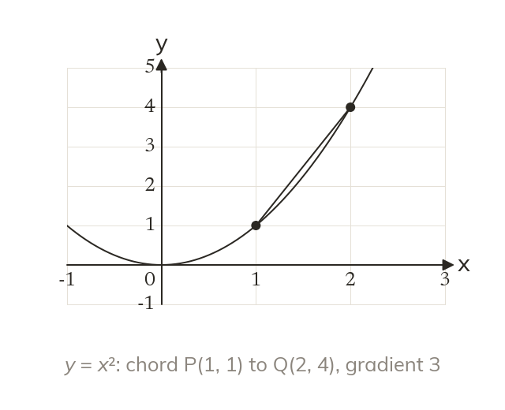
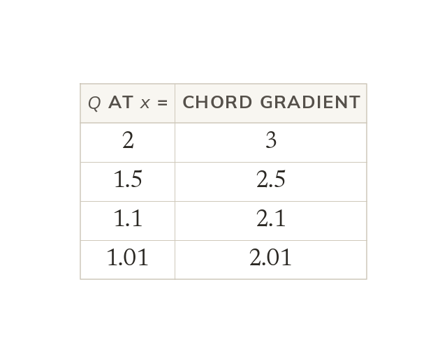
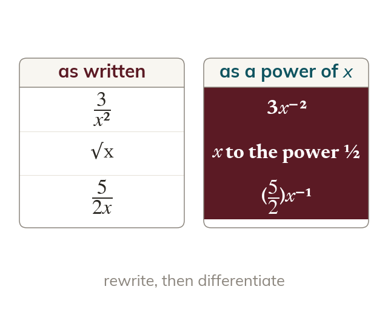
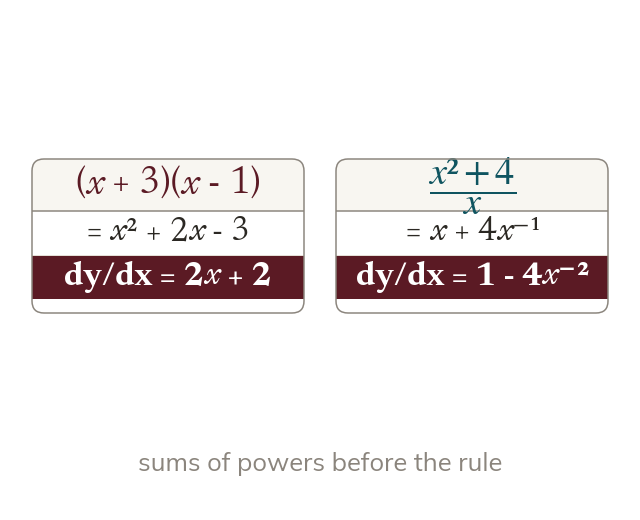

A changing gradient
A curve's gradient changes from point to point. A chord PQ gives an average gradient between two points.
Differentiation finds the exact gradient of a curve at any point, without drawing a tangent. Every later idea in this chapter, from tangents to optimisation, is built on it.
Work down the page at your own pace. Write every answer in your book first, then click to check it.
Read each card, then follow the worked examples one step at a time.

A curve's gradient changes from point to point. A chord PQ gives an average gradient between two points.

As Q slides towards P, the chord's gradient settles. On y = x² at P(1, 1), it settles at 2.
Differentiating y = xⁿ gives dydx = nxⁿ⁻¹. The power comes down as a multiplier, then drops by 1.
Pick an answer. If it's wrong, the feedback tells you which mistake it was.
Section 8.2 Differentiation (p209-211), Activities 8.1 to 8.3 (the chord method), then Exercise 8A Q1-3 (p212-216): single terms, then sums and differences.
Read each card, then follow the worked examples one step at a time.

Every term must be kxⁿ before the rule applies. So 3x² becomes 3x⁻², and √x becomes x⁽¹²⁾.

Brackets are expanded first. A fraction over a single term is split into separate terms.
Pick an answer. If it's wrong, the feedback tells you which mistake it was.
Exercise 8A Q4-5 (negative and fractional powers) and Exercise 8B (brackets to expand and fractions to split first), p212-216.
Finished? Next lesson: 8.4a Tangents to a Curve.
Log in, then search for a code to practise that skill.